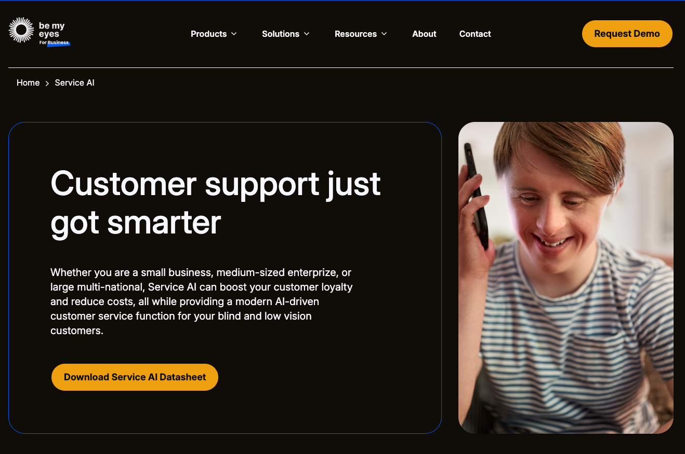
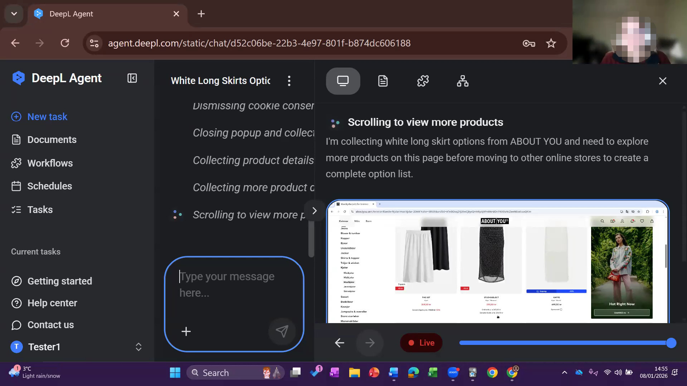

Your UI is not my UI
Simon Lenz, Matthew Seccafien
AI & Accessibility today
Hypothesis
Chatbots and agents are a total revolution for accessibility
User research
User Interviews
We interviewed six people with disabilities
Melody
AI as an Accessibility “Assistant,” not a Replacement
“I do use AI, but only as an assistant for what I'm looking for. Not to do the searching from scratch.”

Matthew
Accessibility AI should be like training wheels, not autopilot
“[…] you have to put your name to things. If it went ahead, did a bunch of tasks, emailed people, and I couldn't really take it back — that feels … uncomfortable, giving it that much autonomy.”
Sinead
AI can explain the cause, not just adapt the interface
“I was really struggling one day … but then, interestingly, it came up with a really insightful reason: it was the drop in barometric pressure. The change had been so fast. And it said that's really common with people with brain injuries.”
No Revolution
- Agents & chatbots are very helpful tools
- Simple interface is very accessible
- Trust & Reliability is a large problem
- We want assistants and not replacements
Allana
AI should only remove the tax that a disability imposes on everyday tasks
“Part of the enjoyable thing in life is struggling through things. Having everything taken care of for you takes away a bit of the fun.”

Rose
Everyone's settings are different and incompatible
“I live in a disabled house […] all our settings are different, even across our iPads. It's actually an in-house joke: I can't look at my husband's iPad, he can't look at mine, and the kids hate using either.”
Myron
AI can provide an interface where you are already a power user
“If I had an AI box, I could tell it to line up all my headers from cell A1 to A20 and just send it. That would save so much time. That would be a life changer for me.”
The limits of adaptability
Today's model
Opportunities
- Setups are very personalized
- Adaptations conflict with each other
- Configuration costs energy
- Standardization has limits
Personalization over adaptability
Your UI is not my UI
Your UI is not my UI
Personalization over adaptability
Your UI is not my UI
Create specific UIs on the fly for your needs
- Adapt to your current task
- Adapt to your preferences
- Adapt to your accessibility needs
- Adapt to your circumstances
- Adapt to your state of mind
- Adapt to your external environment
Demo: same task, two people
Person A
Stressed by long paragraphs, prefers dark backgrounds, standing on a subway with headphones on, one hand free, headache from a barometric pressure change.
[ placeholder — calm, minimal, dark-mode UI ]
Person B
Has a tremor, avoids precise pointer input, prefers keyboard interactions, at home in a relaxed setting writing an email to friends.
[ placeholder — large keyboard-first targets ]
Empathy is our point
[UI] = f([Intent], [Empathy])
Observations of existing state. The industry is already doing this
- Google Search AI Mode — custom layouts assembled per query, not served from a template
- Artifacts — every major AI tool now generates working interfaces inline, on demand
What is gained?
Launching is creating
What if launching an app means creating an app?
Focus shifts from UI to API
- Launching an app is programming an app
- Focus on content and functionality (APIs), not UI
- The interface becomes disposable — generated fresh, every time
Applications are no longer a commodity
- A hand-crafted UI stops being the default way software is distributed
- Disabled users are just the ones suffering most from this today
- Personalized UIs would help everyone, not only accessibility use cases
Revisiting: 8 months later
Rose tried to build a bespoke Steam library manager
It didn't really work out
- Lack of support
- Lack of knowledge
- Still too time consuming
- Too much tinkering required
We replaced configuration toil with developer toil.
Is Rose's failure the idea, or the moment?
We think it's the moment.
Whose context is it?
- A UI generated for you needs to know a lot about you
- For our interviewees that's the most sensitive data there is — health, disability, cognitive state
- Generated interfaces only work if that context can stay private
- On-device / local AI is the path that keeps it that way
“But a UI that keeps changing breaks screen readers.”
Personal is not the same as volatile
- Screen readers and muscle memory depend on stability
- Personalize the content and what's pre-selected — never relocate the controls
- Generated once for you — then remembered and reused
- Stability is empathy for anyone who navigates by memory
Closing
Key takeaways
- Today we adapt one majority interface — it can't serve the variety of humans
- An interface should account for both the task and the human doing it
- With generated UIs, that's economically viable for the first time in history
Back to Sinead
No fighting plugins. No dark grid she can't see. No setup that collapses when she opens a lecture. Just an interface that already understands her — and already fits.
Thank you!
Q&A
Backup — Q&A
Anticipated objections
“Doesn't this just hand more power to whoever owns the AI?”
A generated UI can be empathetic to you — or to whoever owns it.
“If everyone's UI is different, don't we lose common ground?”
Real cost. Keep the periphery visible — personal shouldn't mean sealed.
“Will people actually use this, or just accept the default?”
The empathy framing sidesteps it — the default already fits.